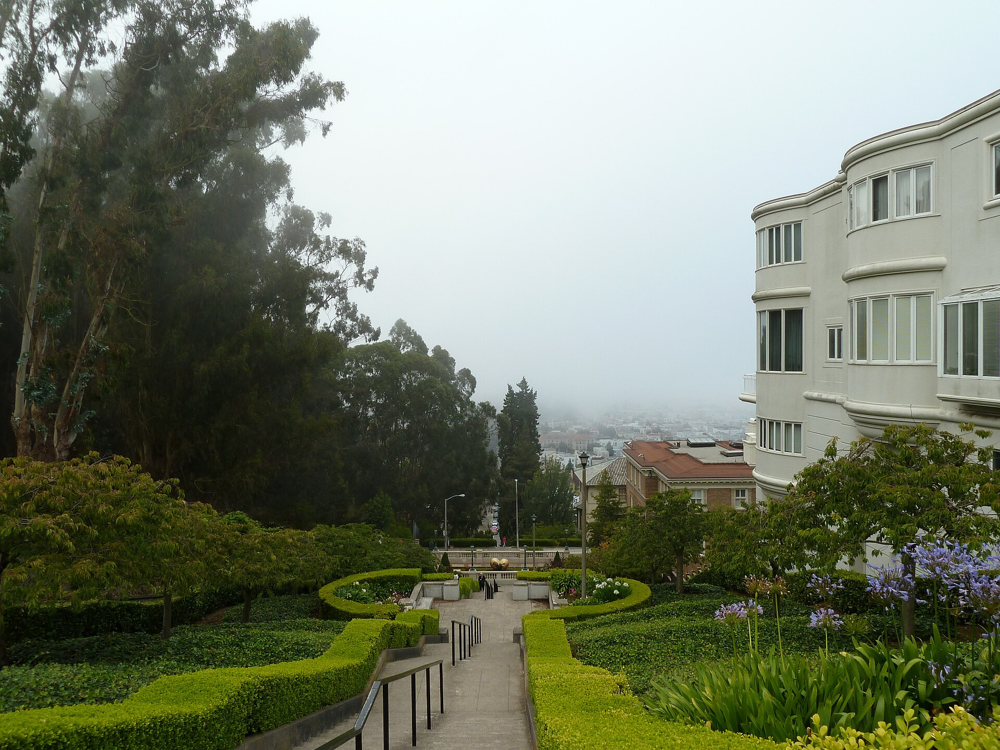

San Francisco County · The City
Founded in 1776 and rebuilt more than once since, San Francisco's single-family home market is running at record prices right now — the tightest inventory in years is pushing houses to sell fast and consistently over asking. Below you'll find current homes for sale and real estate listings in San Francisco, updated throughout the day, whether you're buying your first city home or preparing to sell into today's market.
If you'd like more information on any of these San Francisco listings, just reach out — we're happy to share disclosures, recent nearby sales, and pricing history, and to walk you through anything you're curious about.
And for your convenience, feel free to register for a free account to receive alerts whenever new San Francisco listings hit the market that match your criteria.
Source: Compass Market Insights, single-family homes in San Francisco, July 2026 — 179 closed sales. Updated 20 August 2026. A new all-time high, with pending sales (276) now outnumbering active listings (215); sale-to-list ratios above 120% were reported this month, worth verifying against your own MLS feed before quoting.
About the Community
San Francisco is the only consolidated city-county in California — one government for both, coextensive across roughly 47 square miles at the tip of its own peninsula. Its neighborhoods vary enormously in character and price, from Victorian-lined Noe Valley to the ocean-facing Outer Sunset, and the city remains the second-most densely populated in the country after New York.
Why People Love It Here
Explore the Area
Family favorite, sunny microclimate

Grand homes, Bay views
Ocean-facing, relative value
Hilltop views, close-knit
Schools
San Francisco Unified School District uses a citywide, choice-based enrollment system rather than strict neighborhood boundaries, alongside a large number of respected private and parochial schools.
History
San Francisco was founded in 1776 by Spanish explorers and missionaries, first as the Presidio, a fort, and shortly after as Mission San Francisco de Asís. The 1848 discovery of gold transformed the city almost overnight — its population went from roughly 1,000 people to 25,000 within two years, and it incorporated in 1850, the same year California became a state.
The 1906 earthquake and fire destroyed much of the city, which rebuilt into the modern metropolis known today. San Francisco remains the only consolidated city-county in California, with one government serving both.
The Chen Team in San Francisco
We've helped families buy and sell across San Francisco's most sought-after streets. When you work with us, you get second-generation local knowledge and Compass's full resources.
// Replace with your verified production figures
Market Trends
Quarterly median sold price, single-family homes. Bars are drawn to scale from zero. Year-over-year compares Q2 2026 (796 closed sales) with Q2 2025 (679). Connect to live market data. Hover a bar for the exact figure.
Available Now
Image credits: Long stairway in Pacific Heights, San Francisco, California, US.jpg by Clyde Charles Brown — CC BY-SA 4.0, via Wikimedia Commons; San Francisco (CA, USA), Painted Ladies -- 2022 -- 3055.jpg by Dietmar Rabich — CC BY-SA 4.0, via Wikimedia Commons.
{kind=link}
,_Painted_Ladies_--_2022_--_3055.jpg){kind=link}